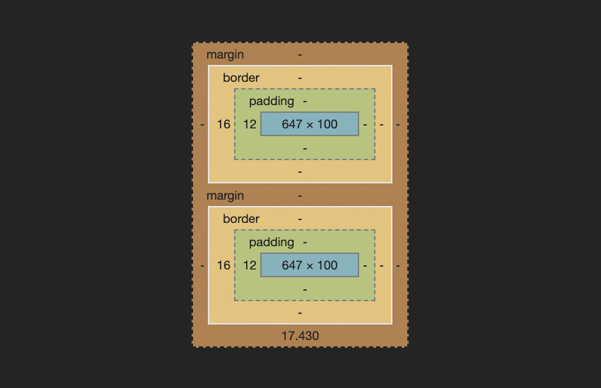

Box Model in CSS
The box model in CSS refers to the way elements are structured in terms of their dimensions and spacing. Each HTML element is considered to be a rectangular box, which consists of content, padding, border, and margin.
The box-sizing property in CSS controls how the total width and height of an element is calculated, taking into account the content, padding, and border.

Clearfix Hack
The clearfix hack is a CSS technique used to fix the problem of a container not expanding to contain its floated children. This commonly occurs when elements within a container are floated, causing the container to collapse in height.
To apply the clearfix hack, you can add a clearfix class to the container element and apply the following CSS:
.clearfix::after {
content: "";
display: table;
clear: both;
}
Margin Collapse
Margin collapse is a phenomenon in CSS where the vertical margins between adjacent elements collapse into a single margin. This typically occurs when there are no padding, borders, or content separating the margins.
The margin: auto; property is commonly used to center block-level elements horizontally within their containing element, while negative margin values can be used to create overlapping effects or adjust positioning.

Holy Grail Layout
The Holy Grail layout is a popular web design pattern that consists of a header, footer, and three columns of content, with the center column being the main content and the side columns being sidebars. The challenge in achieving this layout traditionally was to create equal-height columns with flexible widths.
The problem with achieving the Holy Grail layout was primarily due to limitations in CSS for creating equal-height columns without using hacks or JavaScript.
Modern Approaches
Modern approaches to achieving the Holy Grail layout often involve using CSS flexbox or CSS grid, which provide more flexible and robust methods for creating layouts with equal-height columns and responsive design.
Flexbox allows for easy alignment and distribution of elements within a container along a single axis, making it ideal for creating flexible layouts. CSS grid provides a two-dimensional grid system for placing elements in rows and columns, allowing for more complex and dynamic layouts.